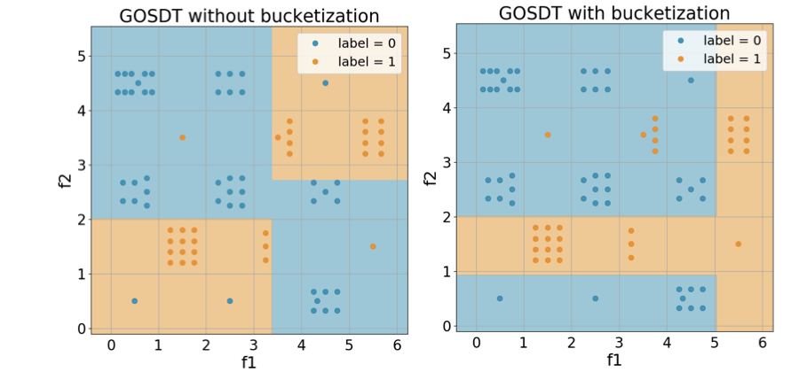
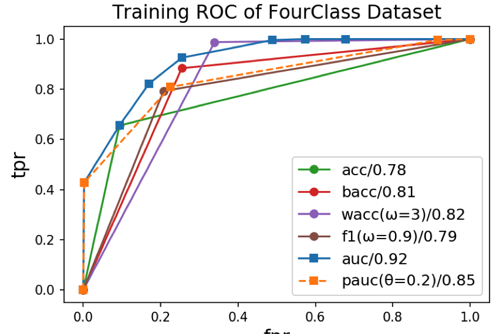
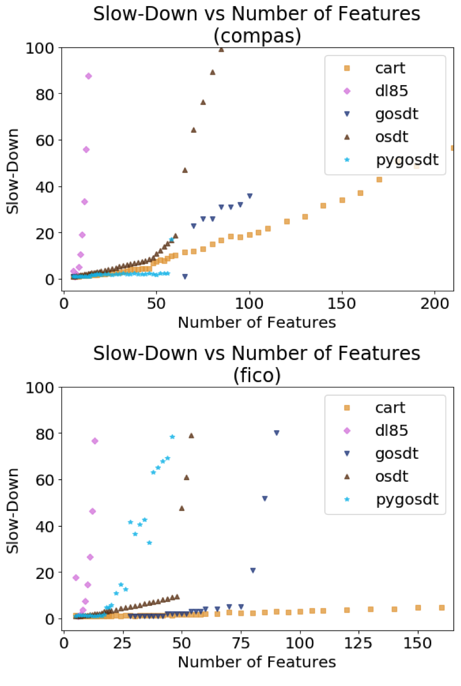

- 前処理で 93.5% → 92.2%論文が作った 2 次元のデータで、しきい値の候補を減らす前処理をすると、最適な木の訓練精度が下がった。BinOCT、DL8.5、GOSDT の 3 つで同じ値が得られた。
- AUC 0.92（正解率で最適化すると 0.78）FourClass のデータで、目的関数ごとに求めた最適な木の訓練データでの ROC の下の面積（\(\lambda = 0.01\)）。論文の図の凡例に書かれた値。
- DL8.5 より数桁速いどちらも C++ の実装で比べた付録の実験の結論。特徴量を増やしたときの遅くなり方も、GOSDT は DL8.5 や OSDT より小さかった。
疎で最適な決定木には、不均衡なデータの扱いと、連続値の特徴量の扱いという 2 つの課題が残っていた
OSDT は規則のリストを最適化する CORELS の考え方を決定木に広げ、誤分類率と葉の数の罰則の和を最小にする木を求めた。ただし OSDT も CORELS も正解率を最適化するように作られており、クラスの数が偏ったデータで使いたい目的関数は扱えない。
連続値の特徴量では、値の種類の数だけ分岐の候補が増え、候補が 1 つ増えるたびに問題の大きさが指数的に増える。そこで BinOCT や DL8.5 は、値の順に並べて同じラベルの例が隣り合う所では分けない、という前処理（論文の言う bucketization）で候補を減らしていた。論文はこの前処理が一見無害でも最適性を損なうことを証明し、すべてのしきい値を候補にしたまま解ける方法を提案する。
偽陽性と偽陰性について単調な損失と、AUC のような順位の統計量を、葉の数の罰則つきで直接最適化する
木は OSDT と同じく葉の集まりで表し、目的関数は損失 \(\ell\) と葉の数 \(H_d\) の罰則の和とする。
- 偽陽性 FP と偽陰性 FN について単調な損失：正解率、バランス正解率（真陽性率と真陰性率の平均）、重みつき正解率（偽陰性に重み \(\omega\) をかける）、F 値。F 値では、正例の割合が高い葉が負、低い葉が正と予測される矛盾が起こりうるので、予測の高い葉から順に走査して単調になるようにする。
- 順位の統計量：ROC 凸包の下の面積（AUCch）と、偽陽性率が \(\theta\) 以下の左側だけの面積（pAUCch）。順位の統計量はふつう例の数の 2 乗の計算が要るが、疎な木では同じ葉の例がすべて同じスコアになり、葉の数も少ないので速く計算できる。凸な代理の損失は使わず、元の統計量そのものを最適化する。
枝刈りの下界も目的関数ごとに作り直した。たとえば AUCch では、これから分ける葉がうまく分かれて正例だけの葉と負例だけの葉になる最良の場合を考え、それでも現在の最良値に届かない木は子孫ごと捨てる（定理 2.1、2.2）。OSDT の下界のうち、そのまま他の目的関数に使えたのは葉の数の上限と葉の並べ替えの下界だけで、残りは新たに導いている。
同じラベルが隣り合う所の分岐を禁じる前処理は、最適な木の訓練精度を下げることがある
論文は、この前処理をしたデータでの最大の訓練精度が、前処理をしないデータでの最大の訓練精度より低くなりうることを、例を作って示した（定理 3.1）。図1 の 2 次元のデータでは、前処理をしないときの最適な訓練精度は 93.5%、前処理をすると 92.2% だった。どちらの値も BinOCT、DL8.5、GOSDT の 3 つで最適性を証明したうえで同じ値が得られている。論文は、次元が高くなると損失はもっと大きくなると予想している。

部分問題を分岐の条件ではなく例の集合で識別し、上下界を親へすぐに伝えて探索を絞る
加法的な損失（重みつきの誤分類など）には、境界つきの動的計画法（DPB）を使う。部分問題は決定木の節点で、その左右の枝が子の部分問題になる。部分問題 \(p\) の最小の目的関数は、特徴量 \(j\) で分けたときの左右の最小値の和の最小である。
- 例の集合による識別：データの異なる特徴量の値の組 \(z_1, \dots, z_U\) を求め、部分問題を、そこに届く \(z_u\) の集合を表す長さ \(U\) のビットベクトルで識別する。DL8.5 は根からの条件の論理積で部分問題を識別するが、違う条件でも届く例が同じなら最適な部分木は同じなので、GOSDT はそれらをまとめて一度に解く。
- 非同期の上下界の更新：部分問題を優先度つきのキューで管理し、依存関係をグラフで持つ。子の上下界が変わったら、親を高い優先度でキューに入れて親の上下界をすぐ計算し直す。DL8.5 が子を解き終えるまで待つ再帰呼び出しなのに対し、GOSDT は子を解き終える前に、ある分岐が別の分岐より悪いと分かれば、その分岐を捨てられる。
- 最初の上下界：下界は同じ特徴量の値をもつ例のうち少数派のクラスをすべて間違えるとした値、上界は全部を一方のクラスと予測した値で、累積和を使って定数時間で計算する。
例の集合で識別すると、似たしきい値の分岐は似た例の集合を生むので、子孫の部分問題の多くを共有する。論文はこれを「増分的な類似サポートの下界」（定理 4.1）として示した。根の分岐だけが違い、左右に行く例の違いが割合 \(\omega\) 以下の 2 つの木では、その子孫の目的関数の差は \((\omega + 2S_{\mathrm{uncertain}})\,\ell_{\max}\) 以下になる。以前の研究では、似た特徴量どうしを比べる下界は確かめる手間のほうが大きく、実際には使えなかった。GOSDT ではこの共有が自然に起こり、連続値の特徴量のすべてのしきい値をダミー変数にしても、いくつかの連続値の特徴量なら扱える。
目的関数を変えると ROC の違う木が得られ、正解率と葉の数のつり合いでも、特徴量を増やしたときの速さでも GOSDT が優れていた
実験には UCI の 7 個（Monk1〜3、Tic-Tac-Toe、Balance Scale、Car Evaluation、Iris）、LIBSVM の FourClass、COMPAS、FICO、モバイル広告のクーポンのデータの計 11 個を使った。FourClass で 6 つの目的関数それぞれの最適な木を求めると、訓練データでの ROC の下の面積は、正解率で 0.78、バランス正解率で 0.81、重みつき正解率（\(\omega = 3\)）で 0.82、F 値（\(\omega = 0.9\)）で 0.79、AUCch で 0.92、pAUCch（\(\theta = 0.2\)）で 0.85 だった（図2）。正解率以外を完全に最適化できる決定木の方法はほかにないので、この実験には比較相手がない。
葉の数と訓練精度の関係では、GOSDT は正解率と葉の数のつり合いを直接最適化するので、効率的フロンティア上の木を出す。ほかの方法が最適からどれだけ離れているかも分かる。付録の例では、Monk1 で GOSDT の木の精度が、同じ葉 8 枚の BinOCT の木より 20% 高かった。Monk2 では同じ葉 7 枚の DL8.5 の木より 3% 高かった。
連続値の特徴量をすべてのしきい値で二値化し、隣り合う \(k\) 個ずつをまとめて特徴量の数を変えると、特徴量が増えたときの遅くなり方は GOSDT がふつう DL8.5 や OSDT より小さかった（図3）。付録では、どちらも C++ の実装である DL8.5 より GOSDT が数桁速く、規模の大きな問題にも対応できたと報告している。一方で、Python 版の PyGOSDT は Python の OSDT ほど速くはなかった。BinOCT は深さ 5、制限時間 5 分で 1 つも完了しなかったため、この実験から外している。


GOSDT は OSDT の目的関数と DL8.5 のような動的計画法を合わせたもので、のちの GOSDT-guesses や TreeFARMS は GOSDT を広げて作られた
- 解き方：加法的な損失では例の集合で部分問題を識別する境界つきの動的計画法、そうでない損失（F 値、AUC など）では OSDT に近い PyGOSDT を使う。
- 目的と制約：損失 ＋ \(\lambda\) × 葉の数。損失は正解率、バランス正解率、重みつき正解率、F 値、AUCch、pAUCch。深さは決めない。
- 限界：論文自身が、特徴量の数が少ないか中程度のデータで最も効果的だと述べている。例の数には強く、数万件を扱える。途中で止めた場合は最適性のギャップを報告する。
- その後：GOSDT-guesses（2022）は、勾配ブースティングからしきい値と下界を推測して GOSDT をさらに速くした。TreeFARMS（2022）は GOSDT の探索を使って、最適値に近い木をすべて列挙する。
@inproceedings{lin2020generalized,
title = {Generalized and Scalable Optimal Sparse Decision Trees},
author = {Lin, Jimmy and Zhong, Chudi and Hu, Diane and Rudin, Cynthia and Seltzer, Margo},
booktitle = {Proceedings of the 37th International Conference on Machine Learning},
series = {Proceedings of Machine Learning Research},
volume = {119},
pages = {6150--6160},
publisher = {PMLR},
year = {2020}
}
本文の数値と図は ICML の出版版（PMLR）による。データの一覧、Monk1・Monk2 の木の比較、DL8.5 との速さの比較は付録で、arXiv 版（2006.08690 v4）を読んだ。書誌は PMLR のページで確認した。Lin と Zhong は同等の貢献と脚注にある。